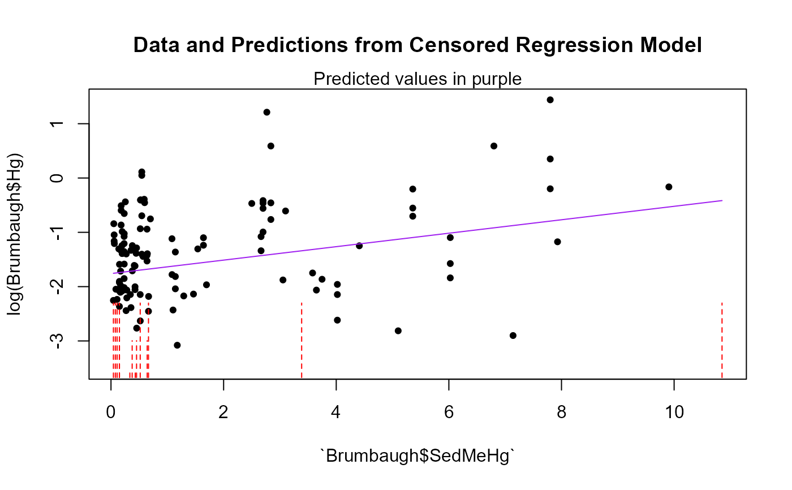

Computes three parametric correlation coefficients for one X variable and the corresponding R squared for multiple X variables, and a regression equation for censored data.
cencorreg(
y.var,
cen.var,
x.vars,
LOG = TRUE,
verbose = 2,
pred.plot = FALSE,
pred.col = "purple"
)The column of y (response variable) values plus detection limits.
The column of indicators, where 1 (or TRUE) indicates a detection limit in the y.var column, and 0 (or FALSE) indicates a detected value is in y.var.
One or more uncensored explanatory variable(s). For multiple variables it must be a data frame of numeric, character and factor variables. See Details
Indicator of whether to compute the regression in the original y units, or on their logarithms. The default is to use the logarithms (LOG = TRUE). To compute in original units, specify the option LOG = FALSE (or LOG = 0).
default verbose=2, see details.
default is FALSE. Produces a plot of data and regression model predictions. To do this the first (or only) x variable in the X dataframe must be a continuous (not factor) variable, and it becomes the x variable in the plot.
default is "purple". Changes the color of the predicted lines in the prediction plot.
When x.vars is one variable, likelihood, rescaled likelihood and McFaddens correlation coefficient (R) are printed.
When x.vars is a data.frame of more than one variable, likelihood, rescaled likelihood and McFaddens coefficent of determination (R2) are printed.
Model coefficients (intercept and slopes), Chi-Squared statistic and p-value for the test that all slope coefficients equal zero (overall test), and model AIC and BIC are provided.
A Q-Q plot of model residuals with corresponding Shapiro-Francia W and p-value are plotted for evaluation of model distributional assumptions when verbose=2 (the default).
x.vars: If one x variable only, enter its name. If multiple x variables, enter the name of a data frame of columns of the x variables. Only columns used as X variables in the regression are allowed. Create this by x.frame <- data.frame (Temp, Flow, Time) for 3 variables (temperature, flow and time) used as the X variables in the regression. To produce a pred.plot plot of predicted values the first variable in the array must be a continuous (not a factor) variable.
AIC and BIC are printed to help evaluate the ‘best’ regression model. Lower values are better when comparing models with the same Y units and same data.Cannot be used to compare models with differing Y units (such as Y~X versus logY~X). Can be used to compare models with differing X units such as Y~X vs Y~logX.
The default Y units are that the Y variable will be log transformed. Change this with the LOG = option, setting LOG = FALSE.
verbose option. Default is 2 which provides full output in the console and qqplots in a graphics window. A value of 1 only provides partial results in the console and no plots. A value of 0 provides no output; the returning computations will be stored in the specified object.
The Y parameter in the model output (modelname$y) is -1 times the data that were input. This is due to the shift from left censored data to the required right censored data of the survreg function. The original data are not changed and are used to draw the pred.plot.
Helsel, D.R., 2011. Statistics for censored environmental data using Minitab and R, 2nd ed. John Wiley & Sons, USA, N.J.
Helsel, D.R., 2005. Nondetects and Data Analysis: Statistics for Censored Environmental Data, 1st ed. John Wiley and Sons, USA, N.J.
data(Brumbaugh)
# One variable
cencorreg(Brumbaugh$Hg,Brumbaugh$HgCen,Brumbaugh$SedMeHg)
#> Likelihood R2 = 0.07647 AIC = 366.2191
#> Rescaled Likelihood R2 = 0.08152 BIC = 373.9126
#> McFaddens R2 = 0.02860934
#>
#> Call:
#> survreg(formula = "log(Brumbaugh$Hg)", data = "Brumbaugh$SedMeHg",
#> dist = "gaussian")
#>
#> Coefficients:
#> (Intercept) `Brumbaugh$SedMeHg`
#> -1.7594846 0.1238447
#>
#> Scale= 0.960393
#>
#> Loglik(model)= -179.6 Loglik(intercept only)= -184.9
#> Chisq= 10.58 on 1 degrees of freedom, p= 0.00114
#> n= 133
# One variable with pred.plot=T
cencorreg(Brumbaugh$Hg,Brumbaugh$HgCen,Brumbaugh$SedMeHg,pred.plot=TRUE)
#> Likelihood R2 = 0.07647 AIC = 366.2191
#> Rescaled Likelihood R2 = 0.08152 BIC = 373.9126
#> McFaddens R2 = 0.02860934
#>

#> Call:
#> survreg(formula = "log(Brumbaugh$Hg)", data = "Brumbaugh$SedMeHg",
#> dist = "gaussian")
#>
#> Coefficients:
#> (Intercept) `Brumbaugh$SedMeHg`
#> -1.7594846 0.1238447
#>
#> Scale= 0.960393
#>
#> Loglik(model)= -179.6 Loglik(intercept only)= -184.9
#> Chisq= 10.58 on 1 degrees of freedom, p= 0.00114
#> n= 133
# More than one variable for demostration purposes
cencorreg(Brumbaugh$Hg,Brumbaugh$HgCen,Brumbaugh[,c("SedMeHg","PctWetland")])
#> Likelihood R2 = 0.1371 AIC = 359.1937
#> Rescaled Likelihood R2 = 0.1461 BIC = 369.7851
#> McFaddens R2 = 0.05301555
#>
#> Call:
#> survreg(formula = "log(Brumbaugh$Hg)", data = "SedMeHg+PctWetland",
#> dist = "gaussian")
#>
#> Coefficients:
#> (Intercept) SedMeHg PctWetland
#> -1.79140776 0.06634913 0.01402344
#>
#> Scale= 0.9264126
#>
#> Loglik(model)= -175.1 Loglik(intercept only)= -184.9
#> Chisq= 19.61 on 2 degrees of freedom, p= 5.53e-05
#> n= 133